⚖ TÍTULO I - DA APLICAÇÃO DA LEI PENAL MILITAR (Art. 1º ao 28)
⚖ TÍTULO II - DO CRIME (Art. 29 ao 47)
⚖ TÍTULO III - DA IMPUTABILIDADE PENAL (Art. 48 ao 52)
⚖ TÍTULO IV - DO CONCURSO DE AGENTES (Art. 53 e 54)
⚖ TÍTULO V - DAS PENAS (Art. 55 ao 109)
⚖ TÍTULO VII - DA AÇÃO PENAL (Art. 110 e 120)
⚖ TÍTULO VIII - DA EXTINÇÃO DA PUNIBILIDADE (Art. 123 e 135)
TÍTULO VI - DAS MEDIDAS DE SEGURANÇA (Art. 110 e 120)
🎥 25. Da Medida de Segurança
Não é pena, é uma forma de sanção penal, com caráter preventivo e curativo, visando a evitar que o autor de um fato havido com infração penal, inimputável ou semi-imputável, monstrando periculosidade, torne a cometer outro injusto e receba tratamento adequado.
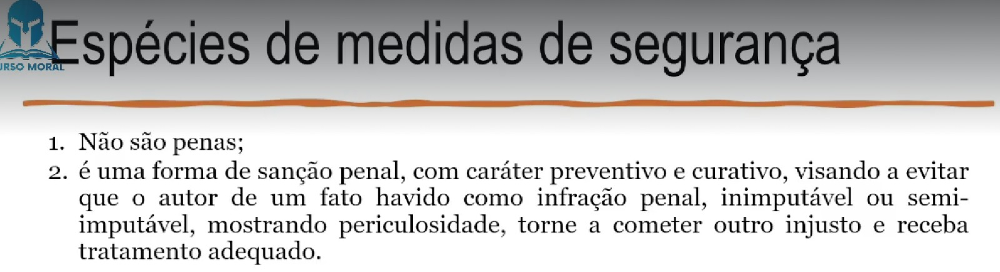
No código penal, se usa para os inimputáveis ou semi imputáveis perigosos, já o CPM é mais amplo, e são de ordem pessoais e patrimonias.
As medidas de segurança são pessoais ou patrimoniais. As da primeira
espécie subdividem-se em detentivas e não detentivas. As detentivas são a internação em
manicômio judiciário e a internação em estabelecimento psiquiátrico anexo ao manicômio
judiciário ou ao estabelecimento penal, ou em seção especial de um ou de outro. As não
detentivas são a cassação de licença para direção de veículos motorizados, o exílio local e
a proibição de freqüentar determinados lugares. As patrimoniais são a interdição de
estabelecimento ou sede de sociedade ou associação, e o confisco. (Art. 110)
Nota:
Pessoais:
2 detentivas: manicômio judiciário e a internação em estabelecimento psiquiátrico (Mínimo de 1 a 3 anos, não existe máximo, é indeterminado)
3 não detentivas: São compridas após a pena
proibição de freqüentar determinados lugares; (Mínimo de 1 ano, não existe máximo)
cassação de licença para direção de veículos motorizados; (Mínimo de 1 ano, não existe máximo)
exílio local; (Mínimo de 1 ano, não existe máximo)
Patrimonial:
interdição estabelecimento ou sede de sociedade ou associação (Mínimo de 15 dias, máximo de 6 meses)
confisco (É ressalvado o direito do lesado ou de terceiro de boa-fé, nos casos
dos ns. I e III.)
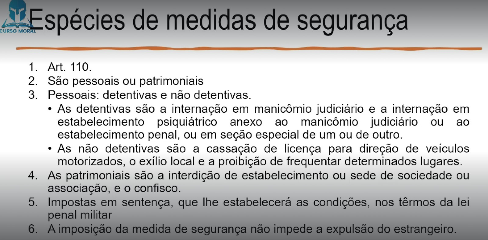
Art. 111. As medidas de segurança sòmente podem ser impostas:
I - aos civis;
II - aos militares ou assemelhados, condenados a pena privativa de liberdade por tempo superior a dois anos, ou aos que de outro modo hajam perdido função, pôsto e patente, ou hajam sido excluídos das fôrças armadas;
III - aos militares ou assemelhados, no caso do art. 48;
IV - aos militares ou assemelhados, no caso do art. 115, com aplicação dos seus §§ 1º,
2º e 3º.
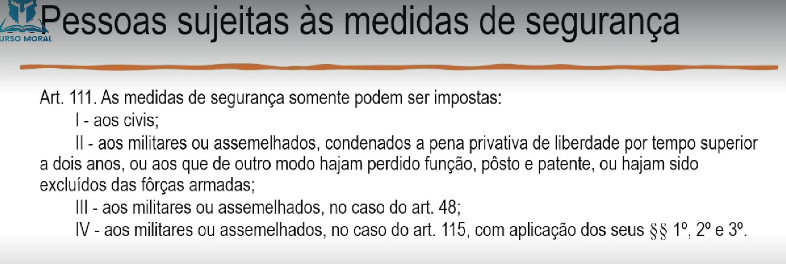
Art. 112. Quando o agente é inimputável (art. 48), mas suas condições pessoais e o
fato praticado revelam que êle oferece perigo à incolumidade alheia, o juiz determina sua
internação em manicômio judiciário
§ 1º A internação, cujo mínimo deve ser fixado de entre um a três anos, é por tempo
indeterminado, perdurando enquanto não fôr averiguada, mediante perícia médica, a
cessação da periculosidade do internado. (Art.112)
§ 2º Salvo determinação da instância superior, a perícia médica é realizada ao término
do prazo mínimo fixado à internação e, não sendo esta revogada, deve aquela ser repetida
de ano em ano. (Art. 112)
§ 3º A desinternação é sempre condicional, devendo ser restabelecida a situação
anterior, se o indivíduo, antes do decurso de um ano, vem a praticar fato indicativo de
persistência de sua periculosidade.
§ 4º Durante o período de prova, aplica-se o disposto no art. 92. (Art. 112)
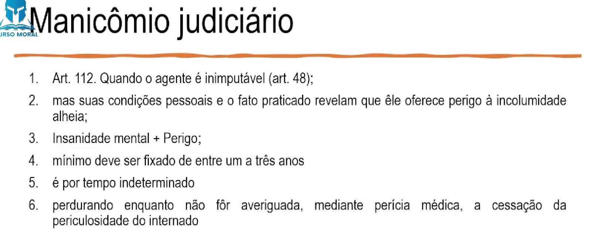
Art. 113. Quando o condenado se enquadra no parágrafo único do art. 48 e necessita
de especial tratamento curativo, a pena privativa de liberdade pode ser substituída pela
internação em estabelecimento psiquiátrico anexo ao manicômio judiciário ou ao
estabelecimento penal, ou em seção especial de um ou de outro.
§ 1º Sobrevindo a cura, pode o internado ser transferido para o estabelecimento penal,
não ficando excluído o seu direito a livramento condicional (Art. 113)
§ 2º Se, ao término do prazo, persistir o mórbido estado psíquico do internado,
condicionante de periculosidade atual, a internação passa a ser por tempo indeterminado,
aplicando-se o disposto nos §§ 1º a 4º do artigo anterior. (Art. 113)
§ 3º À idêntica internação para fim curativo, sob as mesmas normas, ficam sujeitos os
condenados reconhecidos como ébrios habituais ou toxicômanos. (Art. 113)
Art. 114. A internação, em qualquer dos casos previstos nos artigos precedentes, deve
visar não apenas ao tratamento curativo do internado, senão também ao seu
aperfeiçoamento, a um regime educativo ou de trabalho, lucrativo ou não, segundo o
permitirem suas condições pessoais.
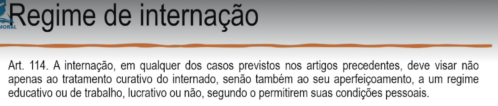
Art. 115. Ao condenado por crime cometido na direção ou relacionadamente à direção
de veículos motorizados, deve ser cassada a licença para tal fim, pelo prazo mínimo de um
ano, se as circunstâncias do caso e os antecedentes do condenado revelam a sua inaptidão
para essa atividade e conseqüente perigo para a incolumidade alheia.
§ 1º O prazo da interdição se conta do dia em que termina a execução da pena privativa
de liberdade ou da medida de segurança detentiva, ou da data da suspensão condicional da
pena ou da concessão do livramento ou desinternação condicionais.
§ 2º Se, antes de expirado o prazo estabelecido, é averiguada a cessação do perigo
condicionante da interdição, esta é revogada; mas, se o perigo persiste ao têrmo do prazo,
prorroga-se êste enquanto não cessa aquêle.
§ 3º A cassação da licença deve ser determinada ainda no caso de absolvição do réu
em razão de inimputabilidade.
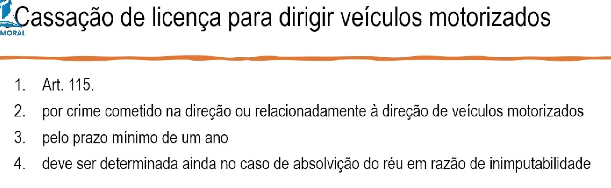
Art. 116. O exílio local, aplicável quando o juiz o considera necessário como medida
preventiva, a bem da ordem pública ou do próprio condenado, consiste na proibição de que
êste resida ou permaneça, durante um ano, pelo menos, na localidade, município ou
comarca em que o crime foi praticado.
Parágrafo único. O exílio deve ser cumprido logo que cessa ou é suspensa
condicionalmente a execução da pena privativa de liberdade.
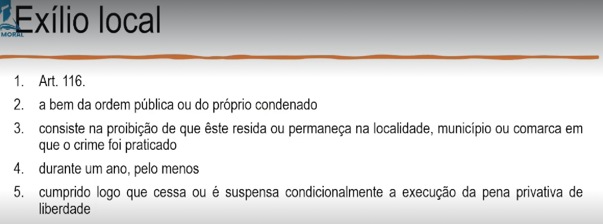
Art. 117. A proibição de freqüentar determinados lugares consiste em privar o
condenado, durante um ano, pelo menos, da faculdade de acesso a lugares que favoreçam,
por qualquer motivo, seu retôrno à atividade criminosa.
Parágrafo único. Para o cumprimento da proibição, aplica-se o disposto no parágrafo
único do artigo anterior.
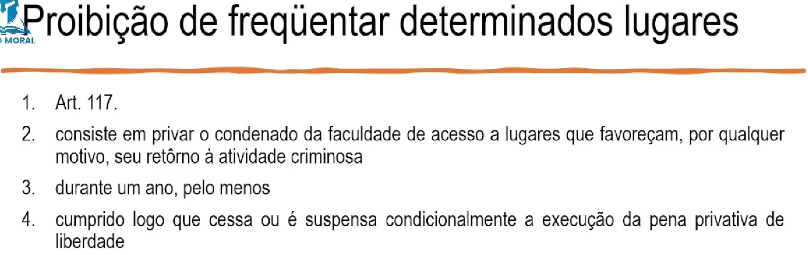
Art. 118. A interdição de estabelecimento comercial ou industrial, ou de sociedade ou
associação, pode ser decretada por tempo não inferior a quinze dias, nem superior a seis
meses, se o estabelecimento, sociedade ou associação serve de meio ou pretexto para a
prática de infração penal.
§ 1º A interdição consiste na proibição de exercer no local o mesmo comércio ou
indústria, ou a atividade social.
§ 2º A sociedade ou associação, cuja sede é interditada, não pode exercer em outro
local as suas atividades.
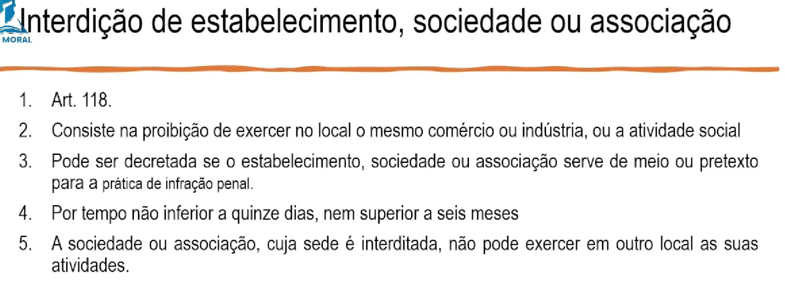
Art. 119. O juiz, embora não apurada a autoria, ou ainda quando o agente é inimputável,
ou não punível, deve ordenar o confisco dos instrumentos e produtos do crime, desde que
consistam em coisas:
I - cujo fabrico, alienação, uso, porte ou detenção constitui fato ilícito;
II - que, pertencendo às fôrças armadas ou sendo de uso exclusivo de militares, estejam
em poder ou em uso do agente, ou de pessoa não devidamente autorizada;
III - abandonadas, ocultas ou desaparecidas.
Parágrafo único. É ressalvado o direito do lesado ou de terceiro de boa-fé, nos casos
dos ns. I e III.
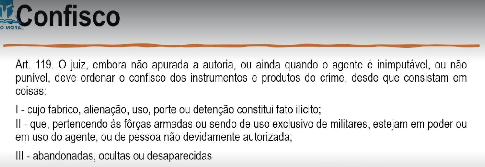
Art. 120. A medida de segurança é imposta em sentença, que lhe estabelecerá as
condições, nos têrmos da lei penal militar.
Parágrafo único. A imposição da medida de segurança não impede a expulsão do
estrangeiro.
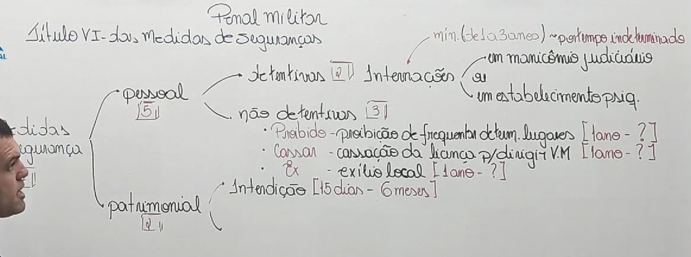